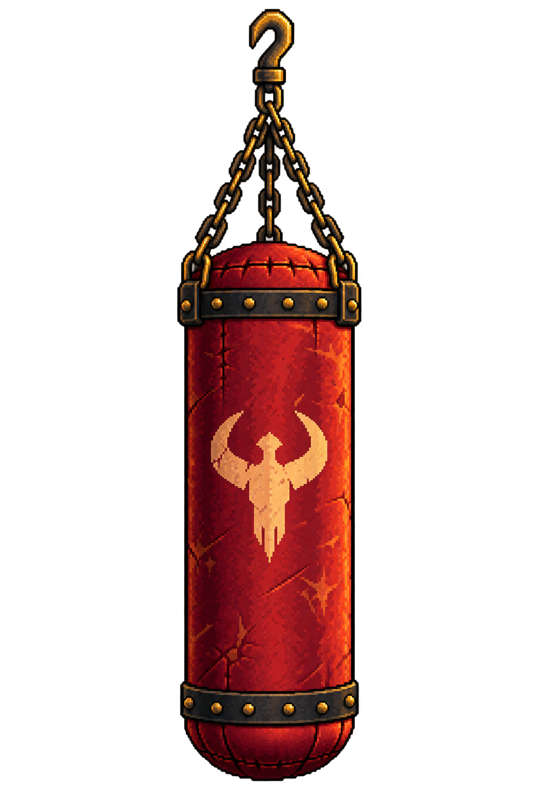
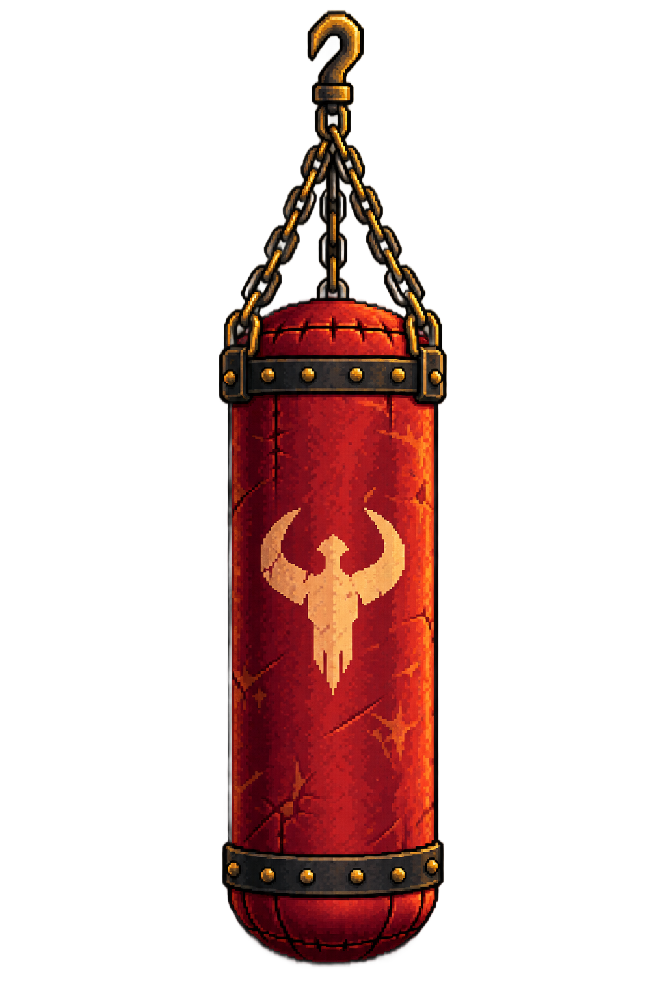

Home iteration 3. Artwork authored with built-in imagegen; transparent derivative exported through AutoSprite. Pending visual review. Placement is provisional for the user's later manual alignment pass.

Download original single-object reference
One vertical oxblood leather punching bag, dark iron bands with brass studs and a gold barbarian emblem. Preserve the complete top hook and suspension connections. Match the warm pixel-art room reference. No ring, room, floor, character, cast background shadow, text or other props.
Export one 1024×1536 RGBA PNG, keeping the canvas and top attachment pivot (512, 17) measured from the upper-left. Air around and between chains remains transparent. This is a static prop: no swing animation. Future decorative variants retain this assembly's silhouette and attachment.
The component controls placement and uniform scale separately. Its rough starting location is outside the ring; the user will refine all room positions together once the alignment editor is available.

Actual Unity composition · Exact prompts · Source hashes and AutoSprite record